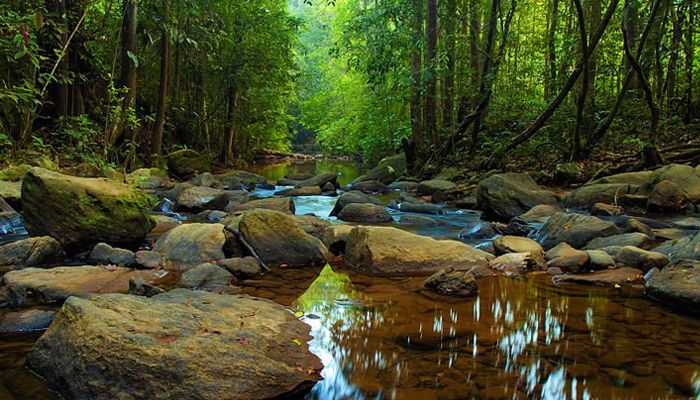
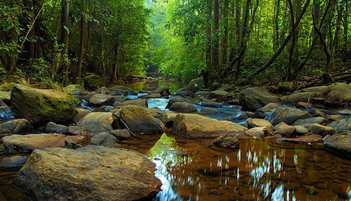

WELCOME TO SRI LANKA
Sri Lanka, originally Ceylon, is an Indian Ocean island republic separated from indian peninsular by the Palk Strait.Sri Lanka offers it all: a tropical climate, stunning sandy beaches backed by lush deep green woods that sway to the sound of bird singing, high-altitude hill-top hideaways, a rich array of animals, and active tea plantations. Sri Lanka's proud legacy is well-preserved and appreciated by inhabitants and visitors alike, with cities and towns exploding with color, noise, and vitality.
Its diversified environment is filled with important holy sites, temples, and ancient ruins ready to be explored, with lovely villages and small towns sprawled along the coast or buried deep into the countryside.

 
